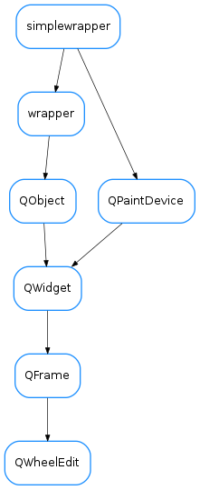

QWheelEdit¶

-
class
QWheelEdit(parent=None)[source]¶ Bases:
PyQt4.QtGui.QFrameA widget designed to handle numeric scalar values. It allows interaction based on single digit as well as normal value edition.
-
DefaultDecDigitCount= 2¶
-
DefaultIntDigitCount= 6¶
-
autoRepeat¶
-
autoRepeatDelay¶
-
autoRepeatInterval¶
Slot executed when an arrow button is pressed from the button group
@param[in] b (_ArrowButton) the button which was pressed
-
clearWarning(self) → None[source]¶ Clears the warning style. If not in warning mode, nothing is done.
-
decimalDigits¶ getDecDigitCount(self) -> int
Gets the number of decimal digits this widget displays
@return (int) the number of decimal digits this widget displays
-
getDecDigitCount(self) → int[source]¶ Gets the number of decimal digits this widget displays
@return (int) the number of decimal digits this widget displays
-
getDigitCount(self) → int[source]¶ Gets the total number of digits this widget displays
@return (int) the total number of digits this widget displays
-
getEditWidget(self) → QWidget[source]¶ Gets the widget object used when the user manually sets the value
@return (QWidget) the widget used for editing
-
getIntDigitCount(self) → int[source]¶ Gets the number of integer digits this widget displays
@return (int) the number of integer digits this widget displays
-
getMaxValue(self) → float[source]¶ Gets the maximum allowed value
@return (float) the maximum allowed value
-
getMinValue(self) → float[source]¶ Gets the minimum allowed value
@return (float) the minimum allowed value
-
getPreviousValue(self) → float[source]¶ Gives the previous value of this widget
@return (float) the previous value of this widget
-
getValue(self) → float[source]¶ Gets the current value of this widget
@return (float) the value currently displayed by the widget
-
getValueStr(self) → str[source]¶ Gets the current value string of this widget
@return (str) the value currently displayed by the widget
-
integerDigits¶ getIntDigitCount(self) -> int
Gets the number of integer digits this widget displays
@return (int) the number of integer digits this widget displays
-
keyPressEvent(self, key_event) → None[source]¶ Exectuted when the user presses a key. F2 enters/leaves edition mode. ESC leaves edition mode
-
maxValue¶ getMaxValue(self) -> float
Gets the maximum allowed value
@return (float) the maximum allowed value
-
minValue¶ getMinValue(self) -> float
Gets the minimum allowed value
@return (float) the minimum allowed value
-
mouseDoubleClickEvent(self, mouse_event)[source]¶ Executed when user presses double click. This widget shows the edition widget when this happens
-
numberChanged¶
-
numberEdited¶
-
resetDecDigitCount(self) → None[source]¶ Resets the number of decimal digits this widget displays to DefaultDecDigitCount
-
resetIntDigitCount(self) → None[source]¶ Resets the number of integer digits this widget displays to DefaultIntDigitCount
-
resetMaxValue(self) → None[source]¶ Resets the maximum allowed value to the maximum possible according to the current total number of digits
-
resetMinValue(self) → None[source]¶ Resets the minimum allowed value to the minimum possible according to the current total number of digits
-
returnPressed¶
-
setDecDigitCount(self, n) → None[source]¶ Sets the number of decimal digits this widget displays
@param[in] n (int) the number of decimal digits to display
-
setDigitCount(self, int_nb, dec_nb) → None[source]¶ Updates the displayed digits.
@param[in] int_nb(int) number of integer digits @param[in] dec_nb(int) number of decimal digits
-
setIntDigitCount(self, n) → None[source]¶ Sets the number of integer digits this widget displays
@param[in] n (int) the number of integer digits to display
-
setMaxValue(self, v) → None[source]¶ Sets the maximum allowed value for the widget
@param[in] v (float) the new maximum allowed value
-
setMinValue(self, v) → None[source]¶ Sets the minimum allowed value for the widget
@param[in] v (float) the new minimum allowed value
-
setRoundFunc(self, roundFunc) → None[source]¶ Sets the rounding function to use when calling _setValue(). This allows you to filter invalid user input
@param[in] roundFunc (callable) the rounding function to use
-
setValue(self, v) → None[source]¶ Sets the value of this widget. Send a ‘valueChanged(double)’ Qt signal
@param[in] v (float/Quantity) the value to be set
-
setWarning(self, msg) → None[source]¶ Activates the warning style for this widget. This means a violet border and a tooltip with the given message.
@param[in] msg (str) the message to be displayed as tooltip
-
showArrowButtons¶
-
value¶ getValue(self) -> float
Gets the current value of this widget
@return (float) the value currently displayed by the widget
-